▲ 파사성 성곽 위에서 본 남한강 방향 풍경. 촬영 시기 정보는 없고 나뭇잎이 짙어 여름~초가을로 보인다. 사진=한국관광공사(변경금지)
"사적인데 입장료도 휴무도 없다는 산성, 주차장에서 얼마나 걸어 올라가야 남한강이 보일까?" 경기 여주 대신면 천서리의 파사성(사적 제251호)은 신륵사나 영릉처럼 이름이 널리 알려진 곳은 아니지만, 성벽 위에서 이포보와 남한강 물길을 내려다볼 수 있는 한적한 산성이다. 2026년 10월 18일 기준으로 한국관광공사 TourAPI와 국가유산포털, 여주시 안내에서 확인한 지정 정보와 오르는 길, 전망 포인트를 정리했다. 한국관광공사 정보에는 입장료 무료와 화장실 있음까지 나와 있지만, 주차 요금의 현행 공지와 대중교통, 억새·단풍 절정 시기는 확인하지 못해 아는 척하지 않고 "확인 필요"로 남겼다. 여주시 파사성 안내 바로가기
💡 먼저 결론
파사성은 한국관광공사 정보상 상시 개방·연중무휴이고 문의처는 여주시 문화예술과(031-887-3563)다. 한 여행 기사(2021년 9월)는 파사성지 주차장에서 남문 터 성곽까지 약 860m, 수호사에서 동문 터 성곽까지 약 570m를 오른다고 소개한다. 입장료는 한국관광공사 정보상 무료다. 두 거리 숫자는 2021년 기사 기준이고, 여주시 안내 페이지에는 거리 수치가 없어 현행 값은 확인하지 못했다.
1. 한눈에 보기 — 공식 자료로 확인한 것과 못 한 것
파사성은 파사산(해발 약 230m) 정상을 중심으로 능선을 따라 쌓은 산성이다. 여주시 대신면과 양평군 개군면의 경계에 걸친 산이어서 성 위에서 보면 두 지자체 일대가 한꺼번에 눈에 들어온다고 한국관광공사 기사는 소개한다. 지도에서 찾을 때는 "여주 파사성" 또는 "파사성지 주차장"으로 검색하는 것이 편하다.
| 항목 | 내용 | 확인 근거 |
|---|---|---|
| 지정 | 사적 제251호, 1977년 7월 21일 지정 | 국가유산포털·여주시 보도 |
| 소재지 | 경기도 여주시 대신면 천서리 일대(지번 표기는 자료마다 달라 생략) | 한국관광공사 TourAPI |
| 종류·시대 | 성곽(산성), 삼국시대 | 국가유산포털 |
| 규모 | 성곽 둘레 약 1,800m(국가유산청 설명). 2025년 한 언론은 성벽 둘레 943m·높이 4~6m라고 썼고, 한국관광공사 기사는 현존 성벽 최고 높이를 약 6.5m로 소개한다. 지정 면적은 자료마다 수치가 달라(위키 35,504㎡ 등) 이 기사에서는 인용하지 않는다 | 한국관광공사 TourAPI(국가유산청 출처)·한국관광공사 기사·언론 |
| 개방·휴무 | 상시 개방, 연중무휴 | 한국관광공사 TourAPI |
| 주차 | 가능. 2020년 경기도 소식지는 입장료·주차료를 받지 않는다고 소개했고, 같은 곳 마애불의 TourAPI 정보는 주차요금 무료·파사성 주차장 이용으로 표기. 면수는 확인하지 못함 | 한국관광공사 TourAPI·경기도 소식지(2020-08) |
| 유모차·화장실 | 유모차 불가, 화장실 있음으로 표기 | 한국관광공사 TourAPI |
| 문의 | 여주시 문화예술과 031-887-3563 | 여주시·한국관광공사 |
| 입장료 | 무료 | 한국관광공사 TourAPI(여주시 안내 페이지에는 요금 항목 없음) |
여주시 안내 페이지(최종 수정 2023-12-21)에는 요금·거리 항목이 없고, 입장료 무료는 한국관광공사 정보에 근거한다. 현장 사정은 바뀔 수 있으니 문의처(031-887-3563)로 한 번 더 확인하는 것이 안전하다.
2. 신라 파사왕 전설과 임진왜란 개축 — 확인된 역사만
국가유산청 설명은 파사성을 신라 파사왕(재위 80~112) 때 쌓은 것으로 전해진다고 적는다. 임진왜란 때는 승려 의엄이 승군을 모아 성을 늘려 쌓았다고 하고, 조선 후기에는 남한산성의 비중이 커지면서 파사성의 중요성이 줄었다고 한다. 여주시 안내는 신라 파사니사금 때 축성했다는 설과 고대 파사국의 옛터라는 설이 있지만 관련 문헌 기록이 없어 이름의 유래와 정확한 축성 시기는 불분명하다고 밝힌다.
한국관광공사 여행 기사(2021)는 축조 방식과 성돌 다듬는 법으로 볼 때 6세기 중엽 이후 한강 유역으로 진출한 신라가 쌓았을 것으로 추정되지만 정확한 시기는 밝혀지지 않았다고 쓴다. 기록으로는 조선 초 『신증동국여지승람』에 '고산성'이라는 이름이 처음 나오고, 1999~2013년 발굴조사에서 백제·삼국·통일신라·고려·조선 시대 특징이 모두 담긴 유물이 나왔다고 한다. 한편 2025년 한 언론 기사는 "과학적 검증 결과 6세기에 완성됐다"고 단정했지만 근거는 제시하지 않았다.
그래서 "삼국사기에 파사성 축성이 기록돼 있다"는 식의 서술은 이번에 확인한 공식 자료에서 근거를 찾지 못해 쓰지 않았다. 2021년 9차 발굴조사 보도에는 지름 8.2m의 원형 1호 집수지와 지름 7.4m의 타원형 2호 집수지가 확인됐고, 1호 집수지 유물이 1592년 류성룡의 발의로 승병장 의암이 성을 고쳐 쌓았다는 기록과 맞는다고 소개됐다.
| 시기 | 내용 | 근거 성격 |
|---|---|---|
| 신라 파사왕(재위 80~112) 때 | 축성했다고 전해짐 | 전승, 문헌 기록 없음(여주시 안내) |
| 6세기 중엽 이후 신라 추정 | 축조 방식·성돌 치석으로 본 추정 | 한국관광공사 기사(정확한 시기 미상) |
| 통일신라 추정 | 2호 집수지에서 인화문토기·기와 출토 | 2021년 발굴조사 보도 |
| 1592년 전후(임진왜란) | 승병장 의암이 승군으로 성을 늘려 쌓았다는 기록, 1호 집수지 유물과 부합 | 국가유산청 설명·발굴조사 보도 |
| 조선 후기 | 남한산성 비중 증가로 중요성 감소 | 국가유산청 설명 |
| 1977-07-21 | 사적 제251호 지정 | 언론 보도·위키백과(포털 원문은 직접 열람하지 못함) |
| 2024년 6월 | 남문지 성벽 35m 구간 보수 공사 준공(13억 6천만 원) | 언론 보도(여주시 설명 인용) |
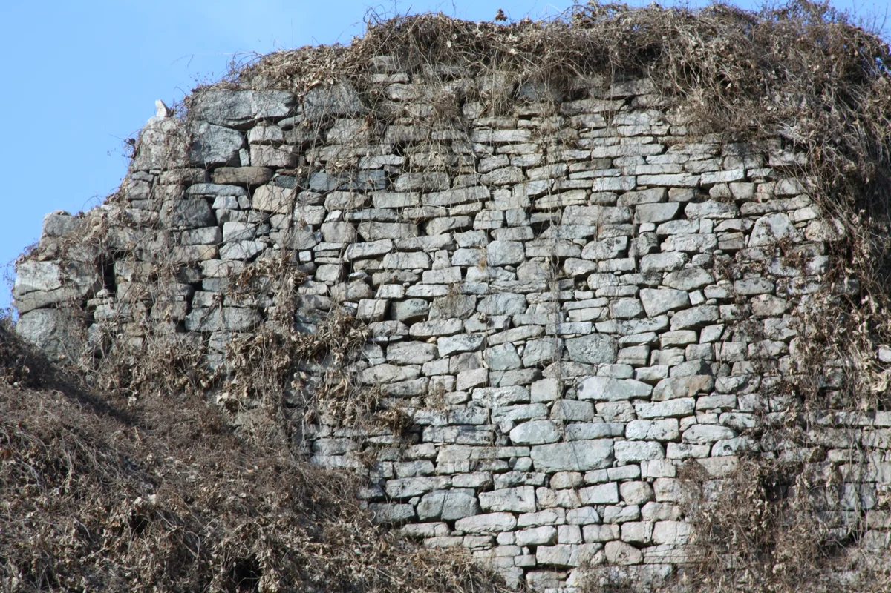
▲ 파사성 성벽 돌쌓기를 가까이서 본 모습. 파일 정보상 2011년 2월 촬영이라 풀이 마른 겨울 풍경이다. 사진=Eggmoon / Wikimedia Commons(CC BY-SA 3.0)
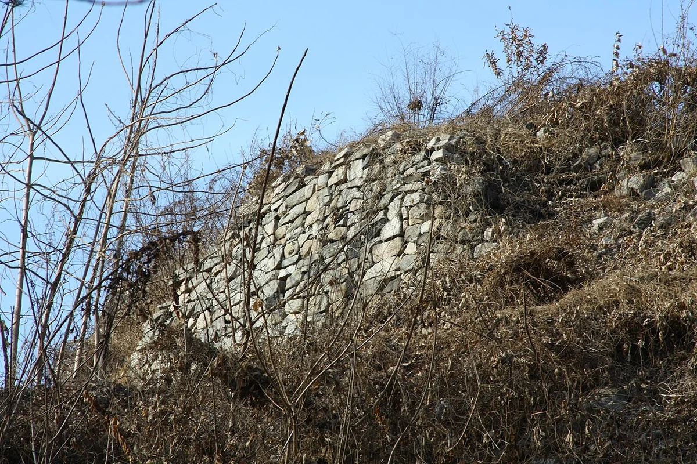
▲ 마른 풀과 덤불 사이로 남은 성벽. 파일 정보상 2011년 2월 9일 촬영이라 겨울 풍경이며, 현재의 정비 상태와 다를 수 있다. 사진=Eggmoon / Wikimedia Commons(CC BY-SA 3.0)
3. 탐방 코스 — 860m와 570m, 그리고 여강길 5.4km
산성까지 올라가는 길은 크게 남문 터 쪽과 동문 터 쪽으로 나뉜다. 한국관광공사 여행 기사(2021년 9월 작성)에 따르면 남문 터 방향은 파사성지 주차장에서 약 860m, 동문 터 방향은 작은 사찰 수호사에서 약 570m를 오르면 성곽에 닿는다. 거리는 길지 않지만 산 위로 향하는 만큼 다소 가파른 오르막이라고 설명한다. 여주시 안내도 오르막이 가파르니 등산화나 운동화를 신으라고 권한다.
2020년 경기도 소식지는 주차장에서 성까지 "1km 남짓"이고 산행이 익숙하지 않은 사람도 1시간~1시간 반이면 충분하다고 소개했다. 다만 이 자료들과 현행 안내판의 거리가 같다는 보장은 없어, 이 기사의 860m는 한국관광공사 기사의 표기라는 점을 밝혀 둔다.
| 들머리 | 성곽까지 | 특징 |
|---|---|---|
| 파사성지 주차장 → 남문 터 | 약 860m | 성돌 사이에서 자라는 '연인 소나무'가 길 중간에 있다고 소개됨 |
| 수호사 → 동문 터 | 약 570m | 동문 터 인근 병풍바위에 양평상자포리마애여래입상(경기도 유형문화재)이 있다고 소개됨 |
| 파사성 인근 마애불(양평상자포리마애여래입상) | 성 서쪽 능선 남쪽 경사면 | TourAPI는 고려 전기 작품으로 추정, 입장·주차 무료, 파사성 주차장 이용으로 표기(한국관광공사 기사는 동문 터 인근 병풍바위라고 서술) |
| 이포교 앞 → 정상(해발 230m) | 약 50분 | 2025년 8월 언론 기사. 처음부터 끝까지 급경사라고 서술 |
| 여강길 8코스 파사성길 | 총 약 5.4km 순환 | 당남리섬 입구에서 시작해 파사성보도현수교(900m)·파사성·수호사·느네마을을 잇는 코스 |
성곽 위 산책이 가능하고 성곽길은 정상까지 이어지지만, 한국관광공사 기사는 남문 터에서 동문 터까지 길 일부만 복원돼 있다고 덧붙인다. 다만 같은 기사는 2021년 7월 기준으로 동문지 인근 성벽 보수 공사 때문에 약 100m 구간을 우회해야 했다고 전한다. 이후 보수가 끝났는지는 확인하지 못했다. 2024년 6월 남문지 35m 구간 보수가 준공됐고 여주시장이 진입로 개선·수목 정비를 계속 지원하겠다고 밝혔다는 보도가 있으나, 동문지 우회 해소 여부는 공식 확인 불가이니 현장 안내판을 따르는 것이 좋다. 이 코스의 공식 난이도 등급과 정확한 왕복 소요 시간도 확인하지 못했다.
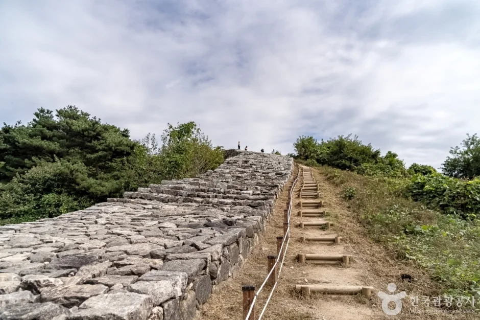
▲ 성벽을 따라 나무 계단이 놓인 구간. 촬영 시기 정보는 없다. 사진=한국관광공사(변경금지)
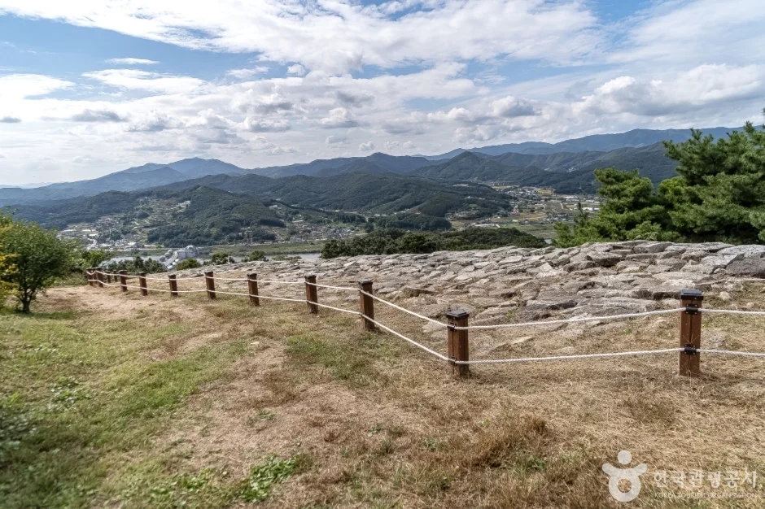
▲ 능선을 따라 이어지는 성벽과 안전 울타리. 촬영 시기 정보는 없다. 사진=한국관광공사(변경금지)
4. 전망 포인트 — 남한강과 이포보, 그리고 확인하지 못한 것
한국관광공사 여행 기사는 파사산 정상 전망대에서 이포보와 이포대교, 당남리섬, 남한강대교가 내려다보인다고 설명한다. 여주시 안내도 성벽에 오르면 남한강과 이포보 일대를 조망할 수 있다고 한다. 국가유산청 설명처럼 성의 일부가 강변 쪽으로 나와 있어 강줄기를 한눈에 볼 수 있기 때문에 군사 요충지로 평가받아 왔다.
2020년 경기도 소식지는 정상의 두 전망 지점을 소개하면서, 남한강을 따라 한쪽으로는 여주 방향의 이포대교와 멀리 남한강대교, 다른 쪽으로는 양평 쪽 경치가 펼쳐진다고 썼다. 이포보에서 가까운 나루터인 이포나루는 서울 마포나루·광나루, 여주 조포나루와 함께 조선 4대 나루로 꼽혔고, 나루터에서 이포보와 당남리섬이 바라보인다고 한국관광공사는 소개한다.
여주보와 신륵사 방향 전망도 확인하려 했지만, 공식 자료에서 파사성에서 그 방향이 보인다는 설명은 찾지 못해 쓰지 않았다. 확인된 조망 대상은 이포보 쪽이다. 이포보전망대(대신면 여양로 2001)는 한국관광공사 설명에 따르면 홍보관은 강 왼쪽, 전망대는 오른쪽에 나뉘어 있고 엘리베이터는 3층까지이며 루프탑은 계단을 이용해야 한다. 2021년 8월 기사에서는 이 시설들이 입장 불가였지만, 2026년 10월 갱신된 한국관광공사 정보에는 이용 시간 09:00~18:00, 휴무 매주 월요일, 입장료·주차 무료, 문의 여주시 종합관광안내소(031-887-2868)로 나와 있다. 임시 휴관은 별도로 있을 수 있으니 방문 전 문의하자.
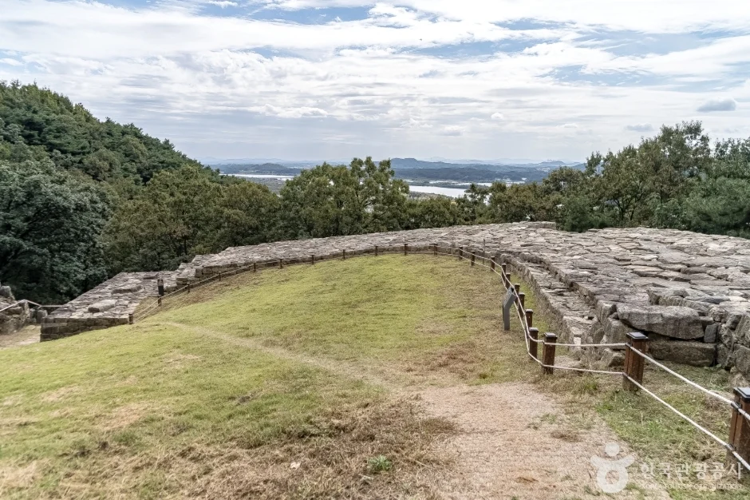
▲ 완만하게 휘어진 성벽과 멀리 보이는 강줄기. 촬영 시기 정보는 없다. 사진=한국관광공사(변경금지)
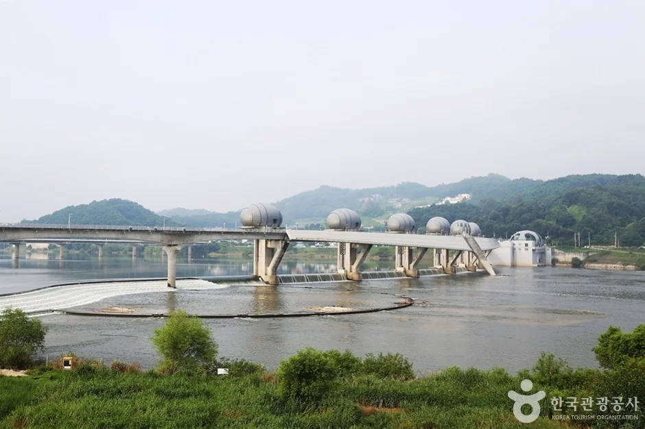
▲ 이포보와 남한강. 이포보전망대 사진으로 파사성 조망 대상이다. 촬영 시기 정보는 없다. 사진=한국관광공사(변경금지)
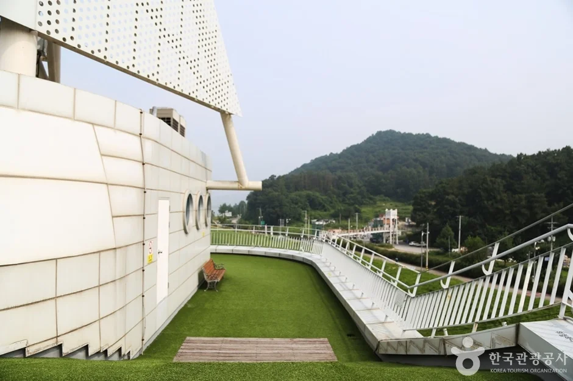
▲ 이포보전망대 옥상. 루프탑은 계단으로 올라간다고 소개된다. 사진=한국관광공사(변경금지)
5. 가을 억새·단풍과 겨울 결빙 — 공식 근거와 일반 상식 구분
파사성의 억새·단풍 절정 시기는 여주시·관리 주체의 공식 자료로 확인하지 못했다. 그래서 시기를 단정하지 않고, 한국관광공사 자료에 나온 상시 개방·연중무휴만 적는다. 대신 한국관광공사가 소개한 당남리섬은 9~10월 가을에 핑크뮬리와 코스모스가 섬을 채운다고 하니, 성곽 탐방과 묶으면 가을 일정을 잡기 좋다(개화 상태는 해마다 다르므로 현재 개방 여부 확인 필요).
겨울 결빙 구간의 통제나 제설 여부도 공식 안내에서 확인하지 못했다. 아래는 공식 규정이 아니라 일반적인 겨울 산행 상식이다. 2020년 소식지에 따르면 정상에는 산 위라고 느껴지지 않을 만큼 넓은 평지가 있으니, 눈이 오면 평지와 성벽 가장자리의 경계를 더 조심하자. 오르막이 처음부터 끝까지 가파르다는 서술(2025년 8월 기사)과 성곽 돌길 특성을 감안해 미끄럼 방지 신발을 신고, 눈이나 얼음이 있는 날은 성벽 가장자리 접근을 피하자. 해가 짧은 계절에는 하산 시간을 넉넉히 잡는다.
| 항목 | 확인 결과 |
|---|---|
| 상시 개방·연중무휴 | 한국관광공사 TourAPI 표기 |
| 가을 억새·단풍 절정 시기 | 공식 확인 못함(당남리섬 핑크뮬리·코스모스 9~10월은 한국관광공사 설명) |
| 겨울 결빙·눈 쌓인 날 통제 | 공식 확인 못함. 문의 031-887-3563 |
| 동문지 성벽 보수 우회(100m) | 2021년 7월 기준 기사. 현재 상태 확인 필요 |
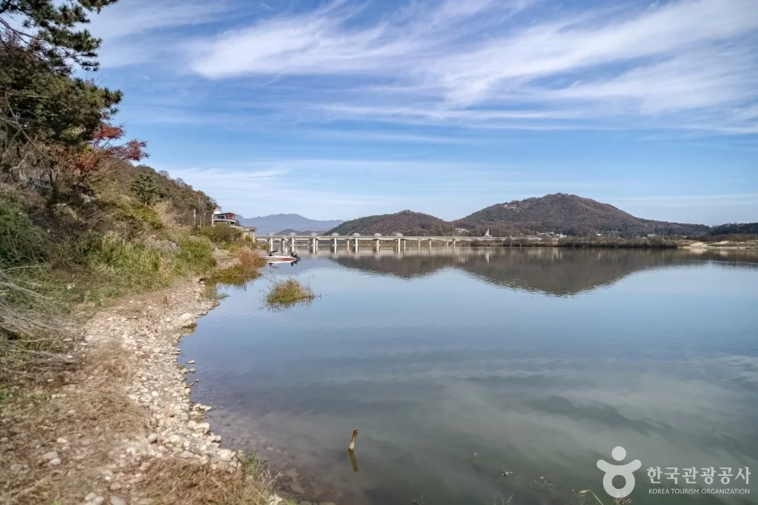
▲ 이포나루 쪽 강가에서 본 남한강과 멀리 이포보. 촬영 시기 정보는 없으나 마른 풀과 물든 나뭇잎으로 보아 늦가을 분위기다. 사진=한국관광공사(변경금지)
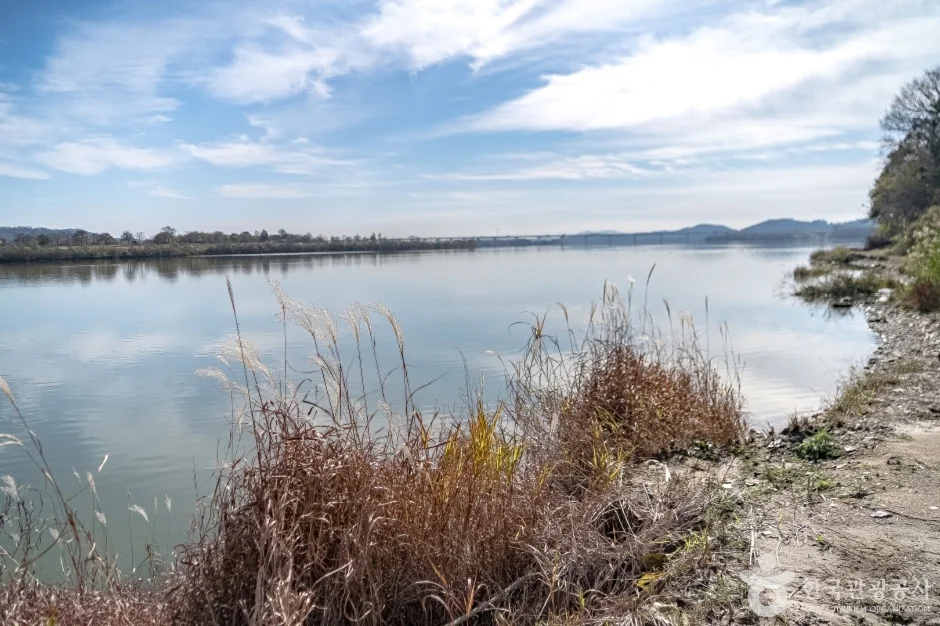
▲ 억새가 누렇게 마른 이포나루 강변. 촬영 시기 정보는 없으며 가을~초겨울 분위기다. 사진=한국관광공사(변경금지)
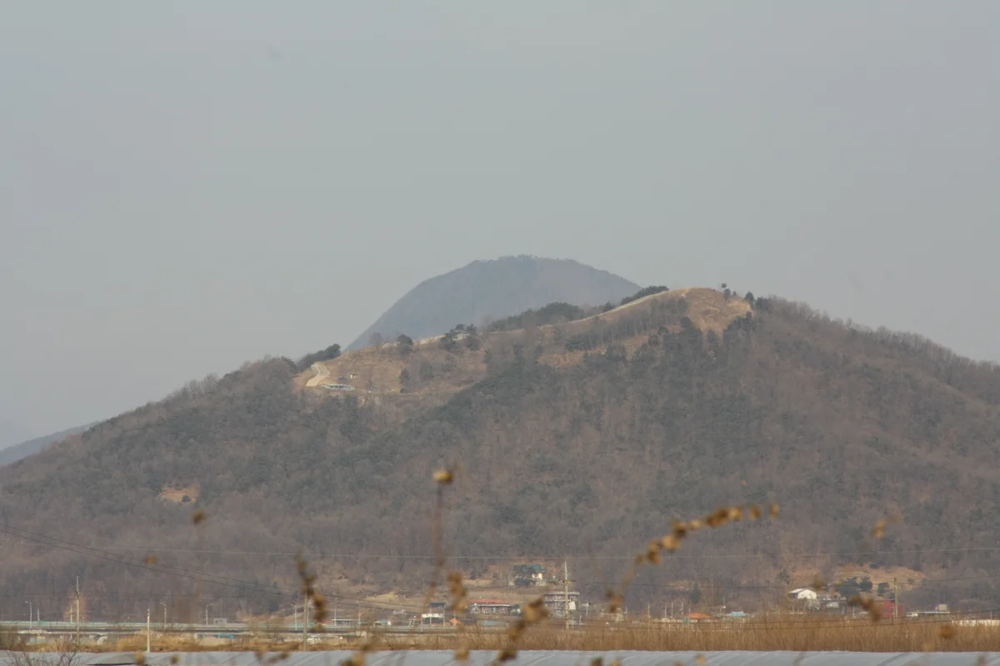
▲ 겨울철 파사산 전경. 파일 정보상 2011년 2월 촬영이다. 올겨울 현황이 아니다. 사진=Eggmoon / Wikimedia Commons(CC BY-SA 3.0)
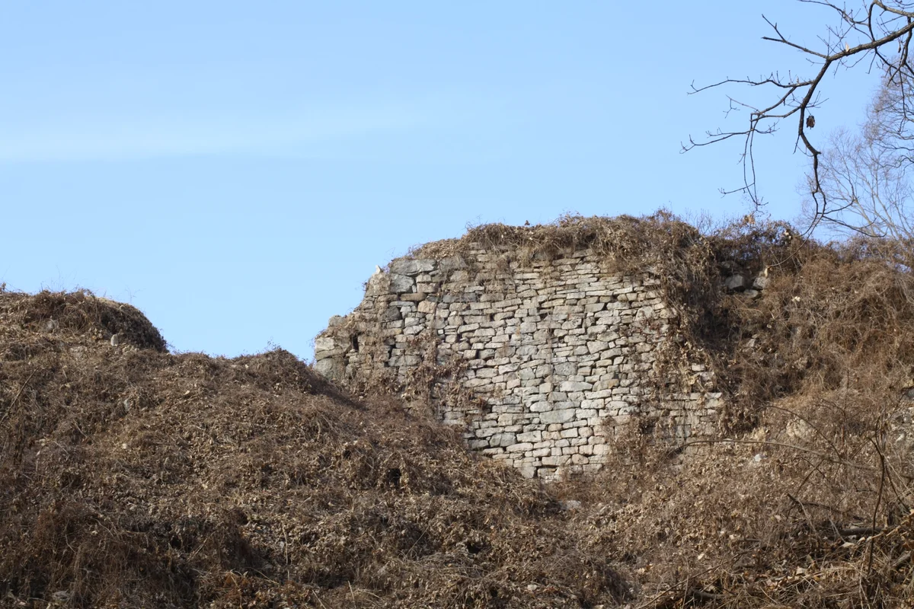
▲ 낙엽과 마른 풀 사이에 남은 성벽. 파일 정보상 2011년 2월 촬영. 사진=Eggmoon / Wikimedia Commons(CC BY-SA 3.0)
6. 가는 법·주차 — 확인 범위
주차장 위치는 "파사성지 주차장"이 남문 터 쪽 들머리라는 정도까지 확인했다. 한국관광공사 TourAPI는 파사성 항목에 주차 "가능", 인근 마애불 항목에 "파사성 주차장 이용·주차요금 무료"를 적었고, 2020년 경기도 소식지도 입장료·주차료를 받지 않는다고 소개했다. 당시 주차장은 공사 중이라 다소 혼잡했다고 하니 면수와 현행 요금은 문의로 확인하자. 이포보전망대는 홍보관 쪽에 주차한 뒤 이포보 공도교를 걸어 건너거나, 강 건너 전망대 쪽 다리 아래에 주차하고 문화광장을 거쳐 엘리베이터로 오르는 방식이다.
| 항목 | 확인 내용 | 미확인 |
|---|---|---|
| 자차 내비 검색어 | 여주 파사성 / 파사성지 주차장(무료로 소개됨, 2020·TourAPI) | 주차 면수·현행 요금 |
| 동문 터 들머리 | 수호사에서 시작 | 수호사 쪽 주차 여부 |
| 대중교통 | 확인하지 못함 | 노선·정류장·배차(여주시·지도 앱 확인 필요) |
| 걷기 앱 | 무료 앱 '여주 여강길'(2020년 12월 출시, 기사 기준) | 현재 서비스 여부 |
| 이포보전망대 | 대신면 여양로 2001, 09:00~18:00, 매주 월요일 휴무, 입장·주차 무료(TourAPI 2026-10 갱신) | 임시 휴관 여부 |
대중교통 정보는 이번 조사에서 공식 노선을 찾지 못했다. 한국관광공사 기사에 따르면 무료 앱 '여주 여강길'에 대중교통 안내 기능이 있으니 활용해 볼 만하다. 여강길 8코스는 당남리섬 입구에서 시작하는 순환 코스로 소개되므로 걸어서 접근하려는 경우 지도 앱으로 경로를 먼저 확인하자.
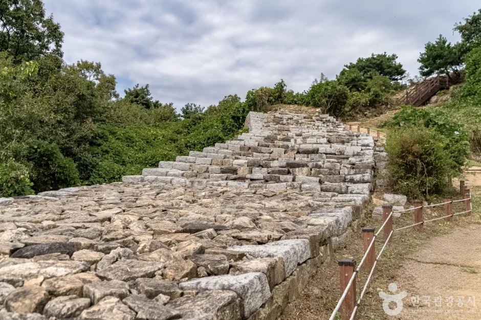
▲ 안전 울타리가 둘러진 성벽 윗면 돌길. 촬영 시기 정보는 없고 숲이 푸른 계절이다. 사진=한국관광공사(변경금지)
7. 연계 코스 — 천서리 막국수촌과 이포보, 신륵사
한국관광공사 여행 기사는 파사성이 속한 천서리에 막국수 식당이 모여 있고, 꿩고기 육수와 동치미 국물을 섞는 것이 특징이라고 소개한다. 한국관광공사 당남리섬 소개에는 5~6월에 유채꽃과 라벤더, 9~10월에 핑크뮬리와 코스모스가 섬을 채우고 인근에 파사성·이포보가 있어 연계 관광에 좋다고 나온다. 이포보 일대에는 자전거길과 쉼터가 있다고 한다.
| 장소 | 확인한 내용 | 미확인 |
|---|---|---|
| 천서리 막국수촌 | 파사성이 속한 천서리의 막국수 식당가(한국관광공사 기사) | 식당별 영업시간·가격 |
| 이포보·이포보전망대 | 홍보관은 좌안, 전망대는 우안. 엘리베이터 3층까지 | 현재 운영시간·입장 가능 여부 |
| 당남리섬 | 5~6월 유채꽃·라벤더, 9~10월 핑크뮬리·코스모스, 상시 개방·무료(한국관광공사 정보) | 2021년 8월 기사 당시 입장 불가였던 구간의 현재 상태 |
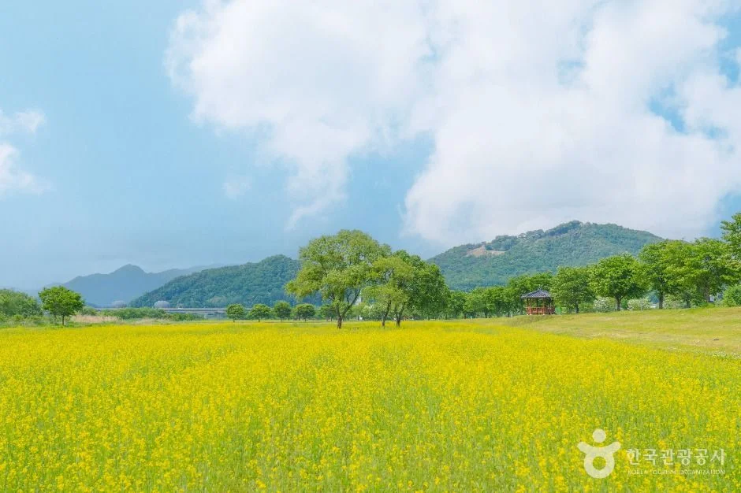
▲ 유채꽃이 핀 당남리섬 일대. 한국관광공사 사진으로 봄(5~6월경) 풍경이며 가을 모습이 아니다. 사진=한국관광공사
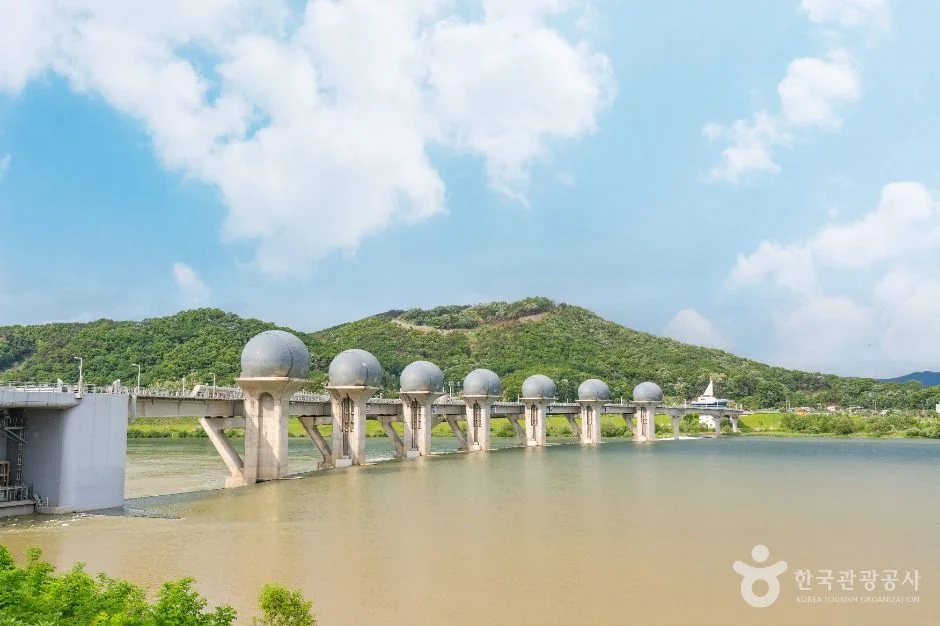
▲ 푸른 하늘 아래 이포보. 한국관광공사 이포보 사진으로 촬영 시기 정보는 없고 여름철 풍경으로 보인다. 사진=한국관광공사
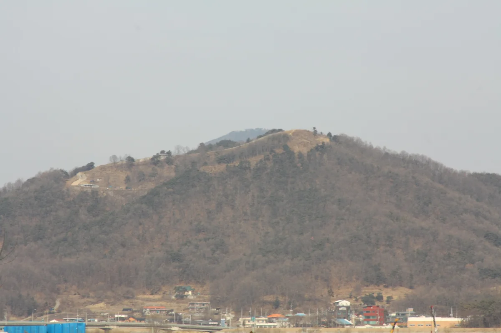
▲ 파사산 일대를 멀리서 본 풍경. 파일 정보상 2011년 2월 촬영이다. 사진=Eggmoon / Wikimedia Commons(CC BY-SA 3.0)
같은 여주 남한강변의 사찰은 여주 신륵사 가이드에서 다뤘고, 남한강 건너 양평의 가을 명소는 양평 세미원·두물머리 가을 가이드를 참고하자. 산성 탐방을 좋아한다면 남한산성 가을 가이드와 비교해 볼 만하다.
✅ 출발 전 체크
1) 상시 개방, 입장료 무료(한국관광공사 정보), 주차는 무료로 소개됐으나 현행 요금은 문의 031-887-3563 2) 남문 터 약 860m·동문 터 약 570m는 2021년 기사 기준이고 급경사 3) 겨울 결빙·보수 구간은 현장 확인 4) 사진은 한국관광공사(촬영 시기 미상)와 2011년 2월 위키 사진이라 현재 모습과 다를 수 있음 5) 이포보전망대는 월요일 휴무.
8. 정리
파사성은 사적 제251호, 성곽 둘레 약 1,800m, 상시 개방·연중무휴로 안내된 한적한 남한강변 산성이다. 파사성지 주차장에서 남문 터까지 약 860m, 수호사에서 동문 터까지 약 570m를 오르고, 정상 쪽에서는 이포보와 남한강을 조망할 수 있다.
입장료는 무료로 안내되지만, 주차 요금의 현행 공지, 대중교통, 억새·단풍 절정 시기, 겨울 통제 여부, 동문지 우회 해소 여부는 확인하지 못했다. 이 기사는 2026년 10월 18일 기준이므로 방문 전 여주시 문화예술과에 문의하자.